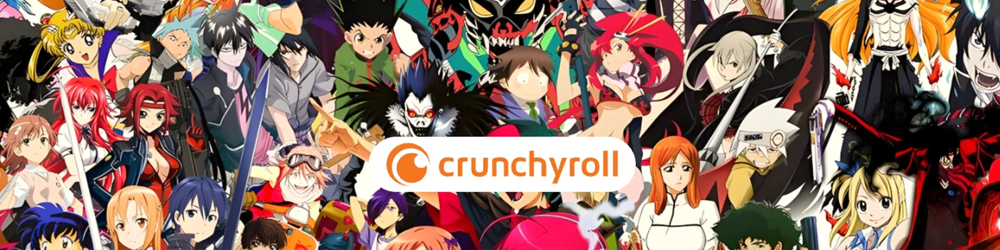
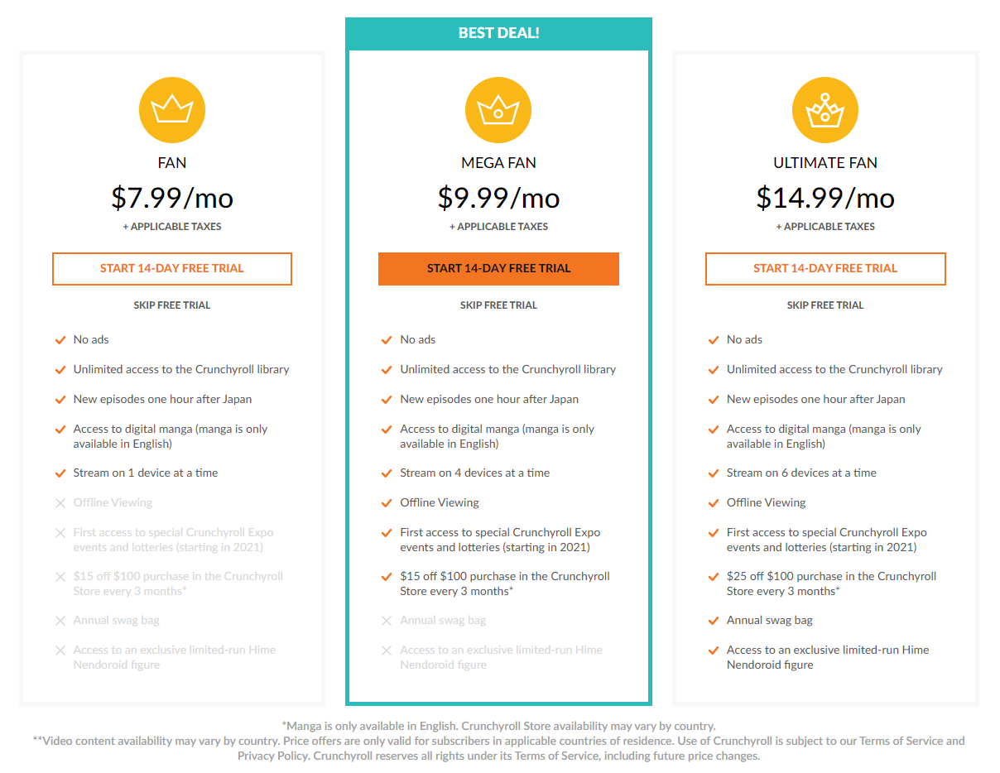

2025 年如何节省 Crunchyroll 订阅费用
你喜欢看动漫吗？如果你是《进击的巨人》_或_《鬼灭之刃》_的粉丝，那么你可能听说过Crunchyroll。在 Crunchyroll 上，你可以随时获取最新的动漫动态。
然而，该平台提供四种不同的订阅计划，每种计划的功能各不相同。所以，当你想选择订阅计划时，你是否曾为不知道哪个 Crunchyroll 计划值得购买而头疼？
别担心。本文将帮助你找到最值得购买的 Crunchyroll 订阅计划。
在选择订阅计划之前，让我们先了解一下为什么使用 Crunchyroll。
为什么选择 Crunchyroll
Crunchyroll 是最出色的动漫观看平台之一。目前，超过 200 个国家和地区可以在 Crunchyroll 上观看动漫，并且 Crunchyroll 拥有最大的日本正版动漫收藏。
此外，你不仅可以在 Crunchyroll 上找到日本动漫，还可以找到韩国网络漫画、中国动画系列以及 Crunchyroll 创作的原创作品。
更重要的是，Crunchyroll 的追剧速度最快。通常，一部动漫在日本上映后，英文字幕版会在一小时内上线。相比之下，Netflix 也是一个观看日本动漫的平台，但它的更新速度非常慢。他们通常要等到整个动漫季结束后才会上传，这对动漫迷来说非常不方便。
因此，如果你是动漫爱好者，使用 Crunchyroll 将为你提供丰富的资料库，并允许你在新动漫发布时立即观看。

2025 Crunchyroll 订阅价格和服务概览
如果你想在 Crunchyroll 上观看动漫，但又不确定哪种订阅方案最适合你，我可以帮你找到合适的方案。以下是 Crunchyroll 各订阅方案的全面比较。
Crunchyroll 提供四种订阅计划：免费、粉丝、超级粉丝和终极粉丝。
下表概述了每个计划的价格和功能，最右边我们列出了 环球巴士 的 Crunchyroll 订阅套餐，以便于比较。
| 订阅计划 | 自由的 | 扇子 | 超级粉丝 | 终极粉丝 | 环球巴士 |
|---|---|---|---|---|---|
| 价格 | 0 | 每月 7.99 美元 | 每月 11.99 美元 | 每月 15.99 美元 | 每月 3.50 美元 |
| 广告 | 是的 | 不 | 不 | 不 | 不 |
| 新的动漫更新 | 延迟 | 同时 | 同时 | 同时 | 同时 |
| 离线下载 | 不支持 | 不支持 | 支持 | 支持 | 支持 |
| 多设备 | 0 | 1 | 4 | 6 | 4 |
| Crunchyroll 商店折扣 | × | 5% | 10% | 10% | 10% |
| 额外福利 | × | × | × | 动漫周边 | × |
从表格中可以看出，Crunchyroll 提供免费版本；然而，它包含的动漫内容非常少，而且包含广告。因此，如果你想享受流畅的观看体验，没有广告，并同步更新最新动漫，则需要付费订阅。

此外，由于付费版本的服务不同，价格也有高有低。从表格中我们可以看出，通过 环球巴士 订阅 Crunchyroll 的费用不到官方 Fan 版的一半。而且，它还能让你使用与 Mega Fan 版相同的服务。这让你能够以更低的价格享受高质量、无广告且流畅的动漫观看体验。
Crunchyroll 免费试用
为了鼓励更多用户使用该平台，Crunchyroll 提供 7 天免费试用。这项福利非常适合首次使用或不确定是否订阅的用户。
当你访问 Crunchyroll 主页时，你会看到一个"免费试用"按钮，如下图所示。点击后，将出现一个订阅方案选择窗口。你可以选择三种付费订阅方案中的任意一种，并试用 7 天。如果你选择"终极粉丝"方案，你将能够在试用期内享受 Crunchyroll 的所有服务和权益。

不过，需要注意的是，如果你在试用期结束后决定不再继续付费订阅，请务必及时取消。否则，Crunchyroll 将自动续订你的订阅并向你收取下个月的费用。
每种订阅的优缺点总结
通过上面的介绍，我们已经对 Crunchyroll 各个订阅方案的定价和功能有了清晰的了解。接下来，我们将分析每个版本的优缺点，帮助你找到最符合你需求的订阅方案。
自由的
- 无风险：你无需支付任何费用。
- 无需登录：一些免费动漫无需登录即可观看。
- 缺乏沉浸式体验：没有高清画质。
- 观看不流畅：观看过程中广告较多。
- 更新慢：免费用户看不到最新的动漫，只能看到一些老动漫或者宣传动漫。
扇子

- 无广告体验：只要付费，观看时就不会有广告。
- 观看完整剧集：你可以不受任何限制地解锁 Crunchyroll 上的所有动漫。
- 新动漫更新：日本新动漫播出后，你可以在几个小时内享受同步更新，英文版甚至可以在 1 小时内享受同步更新。
- 功能有限：粉丝版不支持离线下载或多设备流媒体。
- 不支持多设备：只能在一台设备上登录和使用。
- 性价比不高：每月费用为7.99美元，但与免费计划相比附加值有限。
超级粉丝

- 物超所值：在所有付费套餐中，Mega Fan 价格适中，并且提供几乎所有服务。
- 观看流畅：无广告，让你无间断观看。
- 高播放质量：相比免费版，粉丝版支持更高清晰度的1080P分辨率。
- 多设备观看：你最多可以同时在四台设备上观看，非常适合家庭或共享。
- 无额外福利：不包含线下活动或商品。
- 价格稍高：对于普通观众来说可能有点贵。
终极粉丝
- 完整的 Crunchyroll 体验：Ultimate Fan 包含 Crunchyroll 的所有高级功能。
- 同时支持六台设备：你可以同时登录并在最多 6 台设备上观看，比 Mega Fan 更灵活。
- 专属福利：终极粉丝订阅者可以定期参加线下专属活动，购买限量周边。
- 成本效益低：Ultimate Fan 每月的费用比 Mega Fan Plan 多 4 美元，但实际附加值却微乎其微。
- 好处少：只有少数独家活动和商品，可能对大多数用户没有吸引力。
- 重叠功能：大多数福利已包含在价格较低的 Mega Fan 计划中。
- 不适合普通用户：此计划最适合重视每项额外好处的铁杆粉丝。
总而言之，比较了各个方案的优缺点后，Mega Fan 是最值得的订阅选项。它几乎涵盖了所有关键功能，例如无广告、高清观看动漫、离线下载等，而且价格合理，性价比最高。
以较低价格观看 Crunchyroll 的技巧
在比较了不同的方案后，我发现 Crunchyroll 的订阅费用对于动漫迷来说相当昂贵。例如，一年的 Ultimate Fan 订阅费用为 191.88 美元。如果你在电子产品上花费 191.88 美元，就可以买一台高质量的 27 英寸戴尔显示器。
对于许多用户来说，这个价格太高了，无法享受优质的动漫内容。所以，如果你想在不花太多钱的情况下观看自己喜欢的动漫，我强烈推荐使用像 环球巴士 这样的订阅分享平台。
环球巴士 是一个安全可靠且用户友好的平台，让你可以以官方价格的一小部分分享和访问各种数字订阅，包括 Crunchyroll。使用 环球巴士，你每年可节省约 70% 的 Crunchyroll 购买费用。
过程很简单：在环球巴士上注册，选择 Crunchyroll 订阅计划，你将立即解锁无缝、无广告、无忧的动漫流媒体体验。
环球巴士 的安全系统确保你的帐户始终受到保护，并且他们的客服团队全天候 24/7 为你提供帮助。无论你是资深动漫爱好者，还是初次探索日本动漫世界的新手，环球巴士 都能让你以最优惠的价格畅享优质内容。
准备好省钱了吗？立即访问 环球巴士，以折扣价订阅 Crunchyroll！
如何取消 Crunchyroll 订阅
如果你已经订阅了 Crunchyroll 并想转到 环球巴士，请按照以下步骤取消订阅。登录你的帐户后，你可以找到"帐户设置"。然后选择"高级会员状态"，并点击"取消会员资格"。

哪种订阅最值得你购买？
在全面比较和分析了 Crunchyroll 所有订阅计划的价格和功能后，我们发现 Mega Fan 是最划算的选择。订阅 Mega Fan 后，你不仅可以流畅地观看高清动画，还可以在不同设备之间无缝切换，无需反复登录，享受更便捷的观看体验。
因此，如果你想订阅 Crunchyroll，我们推荐 Mega Fan。
此外，如果你想节省更多，请前往环球巴士以更实惠的价格购买 Crunchyroll Mega Fan 订阅，让你以极低的成本享受高清、无广告的动漫体验。
常问问题
1. 两个人可以同时观看 Crunchyroll 吗？
是的，但前提是你订阅了"超级粉丝"或"终极粉丝"套餐。"超级粉丝"套餐最多允许四台设备同时直播。如果你想管理谁可以访问你的账户，只需前往你的个人资料设置，并在那里调整用户权限即可。
2. Crunchyroll 可以按月取消吗？
是的，Crunchyroll 订阅是按月计费的，可以随时取消。你可以通过 Crunchyroll 网站上的账户设置轻松取消你的高级套餐。
3. 为什么 Crunchyroll 没有德语配音？
事实上，Crunchyroll 确实提供德语配音内容，但并非所有动漫都提供德语音频。这通常是由于许可限制。此外，德语配音仅在德国提供，其他地区不支持。